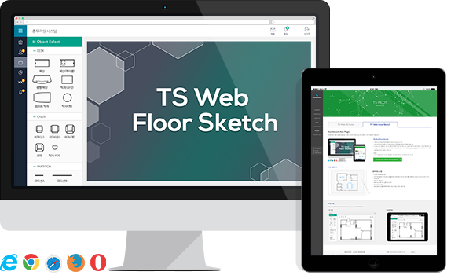
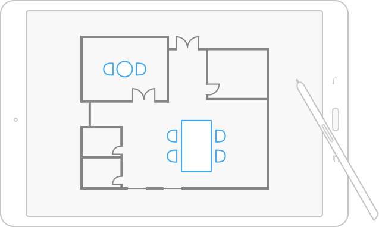
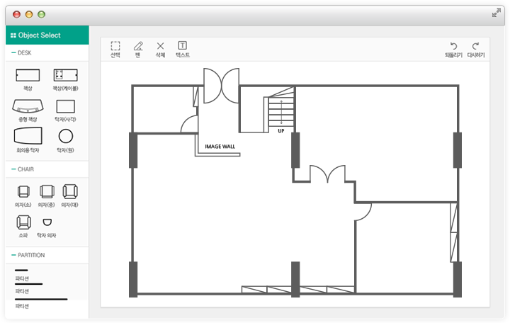
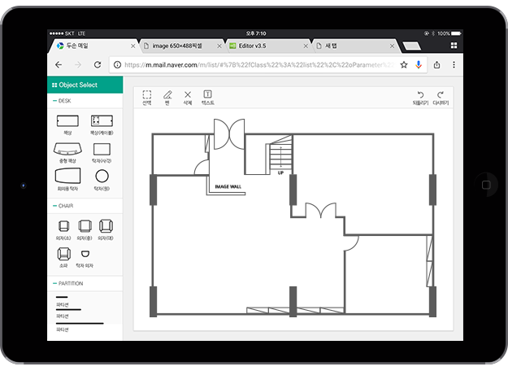

Non-ActiveX, Non-Plugin
어떠한 프로그램도 설치할 필요 없는 HTML5 기반의 100% Pure Web 평면도 그리기 컴포넌트 제품입니다.

TS Web Floor Sketch
100% Pure Web 기반의 평면도 그리기 Component Tool
ActiveX나 Plug-in 별도 설치 없이 HTML5 기반의 웹브라우저 환경에서 사용 가능
Component 제품으로 기존 시스템에 추가하여 복합기능 구현 가능
ex) 총무지원시스템/도면관리, 사무실 레이아웃 관리사무실/가정/작업실 등 이전, 배치 변경시 사전에 내부 공간 사이즈 측정, Drag & Drop을 통한 가구배치 레이아웃 작업등을 웹브라우저 상에서 손쉽게 가능
- 사용환경: HTML5 지원 웹브라우저
 IE10이상,
IE10이상,
 크롬,
크롬,
 사파리,
사파리,
 파이어폭스,
파이어폭스,
 오페라 등
오페라 등
주요 활용분야

- 총무지원시스템
-
- 사무실 자리 배치도 작성
- 부서 이전/재배치 시 자리배치 공사를 위한 도면제작을 위해 집기 이미지를 선택하여 Drag & Drop으로 도면 그리기 기능을 제공
- 입력 기능: 펜,텍스트
- 편집 기능: 선택, 복사, 붙여넣기, 회전
- Undo/ Redo 기능
- 화면상에서 가구를 선택하여 확대 / 축소 / 이동 / 회전 / 삭제 가능
주요 화면
책상, 의자, 파티션 라이브러리 제공하여 Drag & Drop으로 도면위에 배치
PC 화면
Tablet 화면
